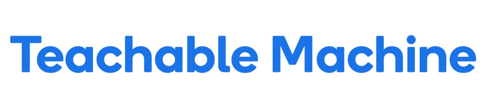

인공지능,
작물 질병 진단의 새로운 솔루션이되다.
📌총 8종의 노지작물에서 16가지 질병 진단 서비스 제공중
철저하게 학습된 모델이 사람의 눈으로 쉽게 파악할 수 없는
작물 질병의 유무을 빠르게 확인하고, 그에 맞는
다양한 해결책과 예방법을 제시합니다.

-
Accuracy
80% ~
수천 장의 데이터로 철저하게 학습된 모델은,
80%이상의 정확도를 가지고 있습니다. -
Service
8종
초기에 파악하기 힘들어 대응이 어려웠던
노지작물 8종의 질병을 예측 분석합니다.
-
Reference
다음의 도움을 받아 개발되었습니다.
